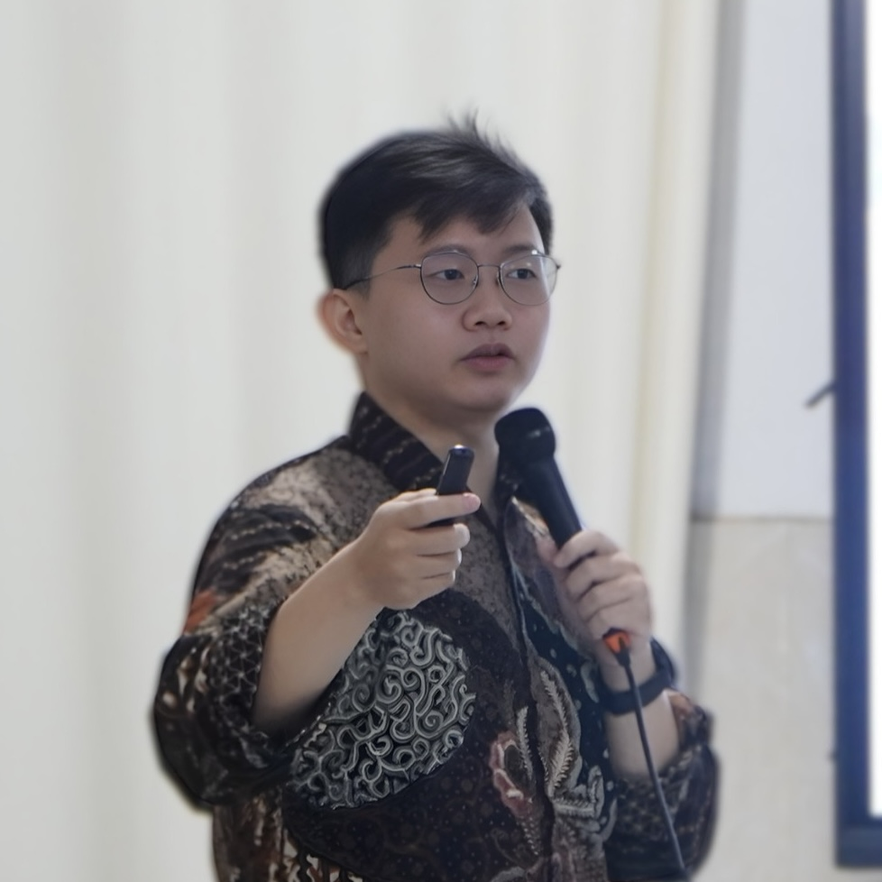

Mathematician | Educator | Founder
From mentoring my peers to coaching top-tier Olympiad (OSN/IMO) talents, I have observed how differently minds process complex logic. This fascination with cognitive mapping led me to found Vitademy, an EdTech venture built to leverage the hidden potential within students and professionals.
At my core, I am a mathematician. My time at the Budapest University of Technology and Economics (BME) cemented my drive to pursue mathematical physics and theoretical research. My ultimate goal is to bridge these two worlds: translating rigorous pure research into accessible, applied digital platforms that empower human learning.
Research Interests: Fractals, Algebraic Geometry, Lie Theory, and Mathematical Physics.

January 2022
Interviewed by the Budapest University of Technology and Economics regarding the international mathematics cohort in Hungary.
Watch Interview →Architected a data-driven EdTech platform mapping human learning behaviors. Engineered an algorithmic assessment evaluating 5 cognitive dimensions to classify users into 32 distinct learning profiles.
View Platform →Conducted rigorous independent research into matrix Lie groups, Lie algebra representations, and exponential maps.
View Codebase →Programmed recursive fractal generation algorithms in Python and documented interactive Colab notebooks for visual dynamic system analysis.
View Codebase →